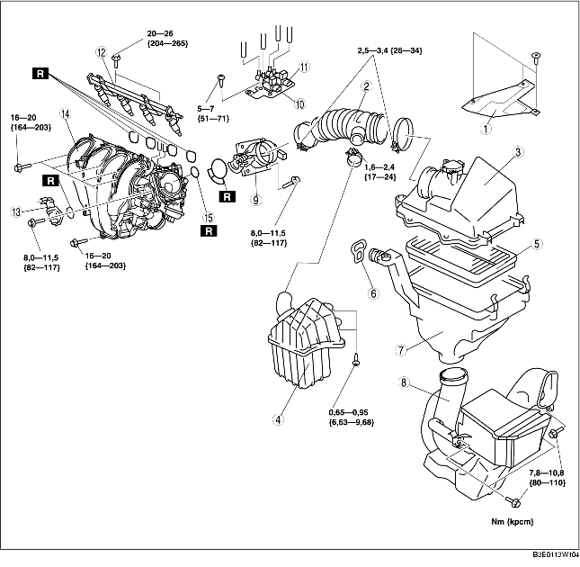

DEMONTERING/INSTALLATION AV INSUGSLUFTSYSTEM [LF]
B3E011300113W10
-
Varni ng
-
• Om motorn och insugsluftsystemet är heta kan detta orsaka allvarliga brännskador. Stäng av motorn och vänta tills den svalnat innan du lossar insugsluftsystemet.
-
• Bränsleläckage och bränslespill från trycksatta bränslesystem är mycket farligt. Bränslet kan antändas och orsaka svår skada och olyckor eller dödsfall. Bränsle kan dessutom irritera hud och ögon. Förhindra detta genom att alltid utföra 'Säkerhetsprocedurer för bränslesystemet' och se även 'FÖRSIKTIGHETSÅTGÄRDER FÖRE SERVICE'. (Se FÖRSIKTIGHETSÅTGÄRDER FÖRE SERVICE [ZJ, Z6, LF].)
1. Ta bort tändstiftskyddet. (Se DEMONTERING/MONTERING AV TÄNDSTIFTSKYDD [LF].)
2. Demontera batterikåpan och batterikanalen. (Se DEMONTERING/MONTERING AV BATTERIET [LF].)
3. Ta bort den undre kåpan.
4. Lossa batteriets minuskabel.
5. Demontera i den ordning som anges i tabellen.
6. Montera i omvänd ordning mot demonteringen.
7. Följ anvisningarna under 'FÖRSIKTIGHETSÅTGÄRDER EFTER SERVICE'. (Se FÖRSIKTIGHETSÅTGÄRDER EFTER SERVICE [ZJ, Z6, LF].)

.
|
1
|
Insugsluftens kåpa
|
|
2
|
Luftslang
|
|
3
|
Luftrenarkåpa
|
|
4
|
Resonanskammare (luftrenarsidan)
|
|
5
|
Luftrenarelement
|
|
6
|
Strap
|
|
7
|
Luftrenarhölje
|
|
8
|
Friskluftsintag
|
|
9
|
Gasspjällhus
|
|
10
|
Magnetventil för variabel insugningsluft
|
|
11
|
Magnetventil för variabel virvelstyrning
|
|
12
|
Bränslefördelare
|
|
13
|
IAC-magnetventil
|
|
14
|
Insugningsrör
|
|
15
|
EGR-rörpackning
|
Observera vid demontering av friskluftslang
1. Demontera främre stötfångaren innan friskluftslangen demonteras. (Se DEMONTERING/MONTERING AV FRÄMRE STÖTFÅNGARE.)
Observera vid demontering av insugningsröret
1. Ta bort oljestickans rör. (Se DEMONTERING/MONTERING AV OLJETRÅGET [LF].)
2. Demontera gasvajerkonsolen från insugningsröret.
Observera vid montering av luftrenarhölje
-
Observera
-
• Innan luftrenarkåpan monteras måste du kontrollera att gummifästena på batterihållaren inte har fallit av.
-
• Du kan stryka på lite tvålvatten när du sätter in luftrenarkåpan i gummifästena så att den glider lättare.
1. Kontrollera att två gummifästen monterats på batterihållaren.
2. Montera luftrenarkåpan vid gummifästena.
Observera vid montering av rem
1. Använd remmen för att fästa skyddskåpan och luftrenarkåpan så som figuren visar.
Observera vid montering av luftslang
1. Rikta in märkena på gasspjällhuset och luftslangen.